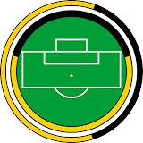

The Corridor of Uncertainty
A podcast at the intersection of maths & sport — exploring what the numbers really tell us.
Hosted by Dr Jess Hargreaves & Dr Rich Bingham · Department of Mathematics, University of York
📺 Browse Episodes ▶ YouTube Channel
Latest Episodes
Episode 9
Have the Dodgers Broken Moneyball?
Exploring the origins of Moneyball, myth-busting common misconceptions, and examining how MLB teams use mathematics for competitive advantage.
Read more →
Watch on YouTube ↗
Episode 8
Curling by Numbers: Why GB Won Silver
Analysing Team GB's silver medal performance at the 2026 Winter Olympics curling final against Canada through statistics and probability.
Read more →
Watch on YouTube ↗
Episode 7
Why Did Man City Sign Semenyo?
Exploring how football clubs use data analytics to identify and sign players, with Manchester City's signing of Antoine Semenyo as a case study.
Read more →
Watch on YouTube ↗
View all episodes →
Explore